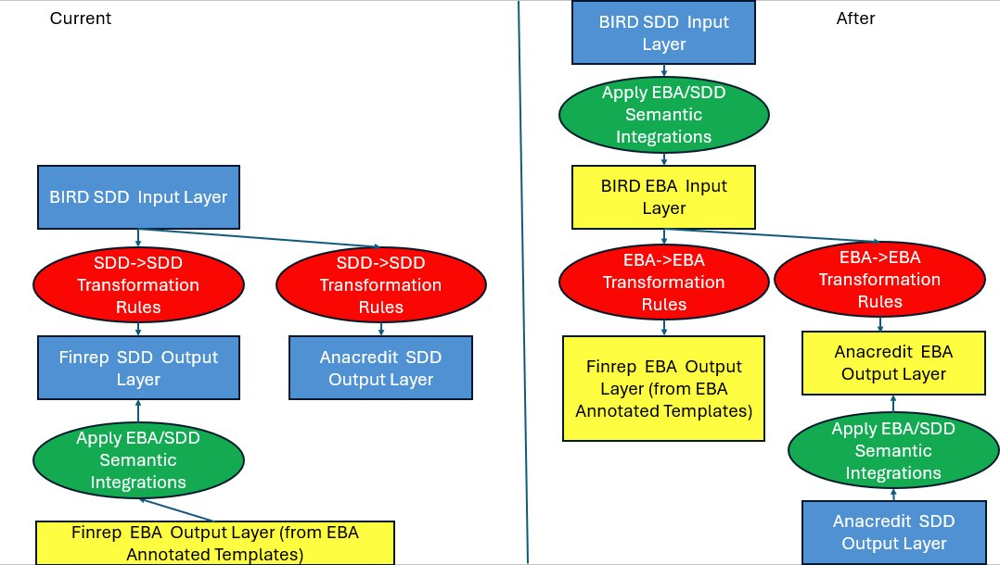
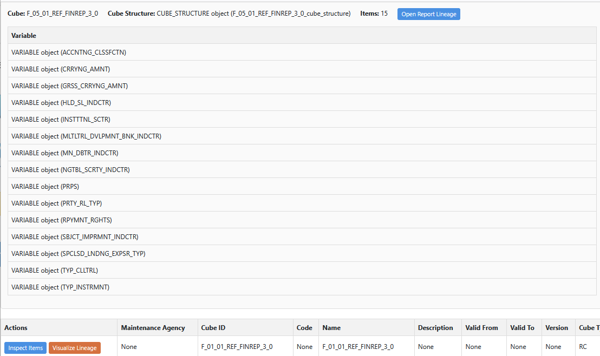
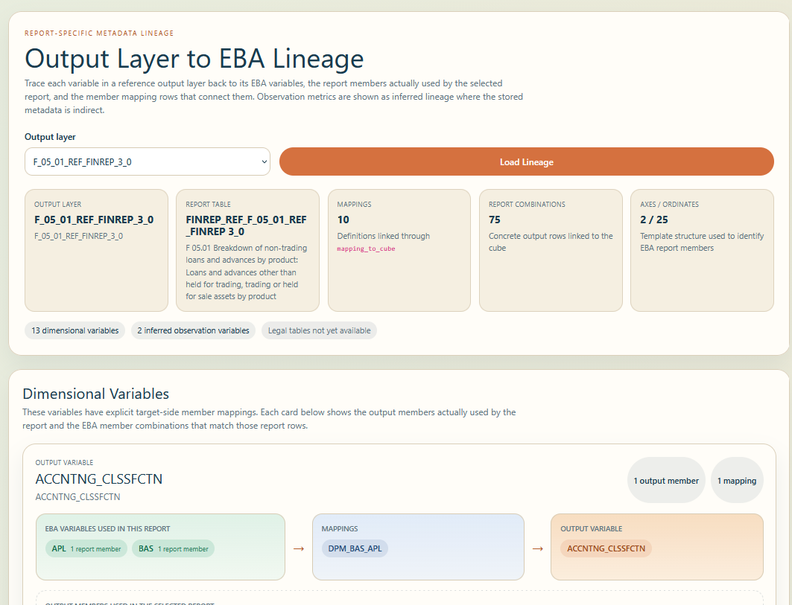
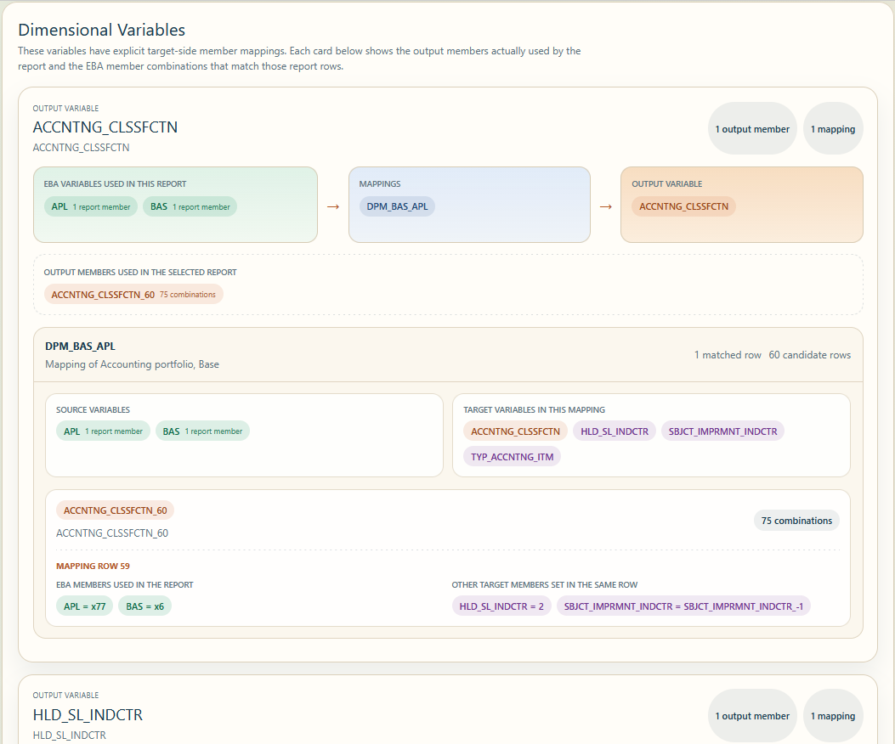

Open Semantic Integration — turning existing regulatory dictionaries and mappings into a measurable, automatable semantic integration workflow.
Test a repeatable method to identify all semantic integrations between SDD and the EBA dictionary, leveraging integrations that already exist in BIRD. The experiment evaluates whether integrated mappings can drive cleaner transformation logic across reporting frameworks (e.g., FINREP, AnaCredit).



